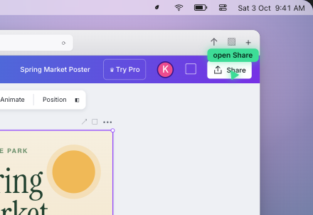
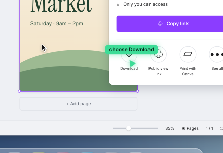
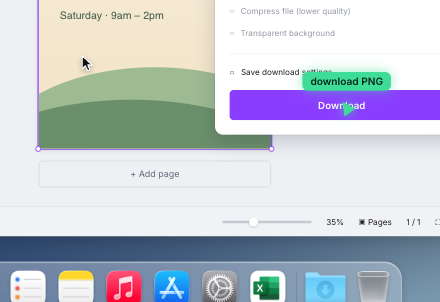

Leave the task
Search documentation or scrub through a tutorial.
An AI guide for the software you already use.
Sage points; you make every click.
The work is clear. The next step in the software isn’t.
Search documentation or scrub through a tutorial.
Describe the interface to a chatbot or ask a colleague to look.
The next menu opens. The instructions no longer match.
For a team, every repeated question can become another interruption.
Say what you want to do.
Sage reads the current screen.
It explains and points.
You take each action.
Get help without handing over control of your computer.
Screen understanding, speech, and visual overlays come together in the Mac prototype.



Sage points. You click. It guides the next step.
Illustrated interaction from the website demo. Native-app recording is the next proof asset.
Voice questions, screen interpretation, spoken answers, and follow-along pointing.
Ground guidance in approved instructions: file names, export settings, review steps, and handoffs.
The pointer is the interface. Trusted team knowledge is the advantage to build.
Start with client-file preparation: export settings, naming, review, and delivery.
Initial target · teams of 10–50Why this starting pointThe existing Mac app fits the platform. File handoffs provide a bounded workflow to test.
Who buys / who usesOwner or team lead / junior staff and contractors.
What discovery must establishRepeated training pain, permission to process screens, and willingness to pay.
Strong general software help.
Our direction: approved team procedures, delivered on the live screen.Reusable instructions outside the task.
Sage follows the user’s current screen and waits for their action.Organizational guidance and deployment.
Our intended entry point: a small team and one bounded pilot.Pointing alone is not unique. Company knowledge, reliability, and paid outcomes must earn the advantage.
Built Sage’s native Mac prototype, voice pipeline, screen guidance, backend, and website.
The experience brings the answer back to the interface where the user is working.
Started from the MIT-licensed Clicky project.
Capture real-app demonstrations. Interview buyers. Harden installation, privacy, accessibility, and pointing.
Test whether people finish tasks with fewer trainer interruptions.
One team, five to ten users, and agreed success criteria.
$300–$750 initial pricing experiment
Monthly minimum and pooled usage, priced after measuring delivery costs.
Value to test = time saved + fewer interruptions + fewer mistakes.
Measure correct task completion, trainer interventions, cost per workflow, and paid continuation.
| Today | Production | |
|---|---|---|
| Understanding Claude Sonnet 5.5 | $0.007–0.01 | $0.007–0.01 |
| Hearing speech to text | Free · on Mac | ≈ $0.001 |
| Voice text to speech | Free · Mac voice | $0.003–0.01 |
| Total | ≈ $0.01 | ≈ $0.02 |
| Today | Production | |
|---|---|---|
| Light 5 questions a day | $1.10 | $2.20 |
| Typical 15 a day | $3.30 | $6.60 |
| Heavy 40 a day | $8.80 | $17.60 |
A ten-person, four-week pilot uses about $70 of AI at production quality, against a $300–$750 price.
Estimates from October 2026 list prices and measured requests (≈3,300 input tokens including the screenshot, ≈300 output). Each follow-along step counts as one question. Server, website, and waitlist run on free tiers today.
Understand peopleStreaming speech recognition tuned for accents and team vocabulary.
Sound humanA natural voice you can interrupt, synced to the pointer.
Point preciselyRead the Mac’s button map and on-screen text, not pixel guesses.
Ship like a productSigned app, auto-updates, accounts, billing, crash reports.
Subscription to test$15–$25 per user per month with fair use: ≈ 55–75% margin on a typical user.
| Lean | Comfortable | |
|---|---|---|
| Apple Developer signing | $99 | $99 |
| Legal & registration | $0 templates | $600–1,400 |
| Brand & build tools | $60 | $500–1,100 |
| Pilot usage buffer 3 teams · 2 months | $400 | $600 |
| Security review | Later | $1,000+ |
| Total | ≈ $560 | ≈ $2,800–4,200 |
Then ≈ $20–60 a month fixed (Apple, hosting, email) plus usage. Founder-built; hired development is not included.
Release hardening, model and voice usage, pilot onboarding, and direct customer discovery.
About $1,000–$1,500 a signed Mac app plus three pilots, on the lean plan with a buffer
Timeframe and agreement to be set together before any money changes hands.
Introduce agency owners, team leads, or trainers who repeatedly explain software workflows.
Help qualify pilot teams and sell a specific, measurable outcome.
The milestone: three paid pilots, measured task outcomes, and evidence of renewal.
Keside Onyeocha · kesideonyeocha.com ↗